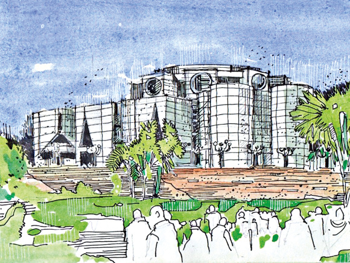
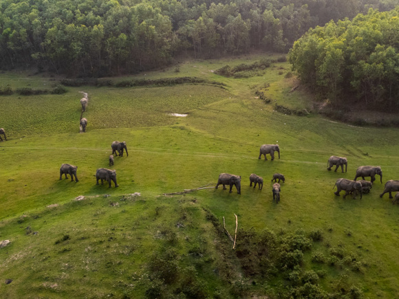
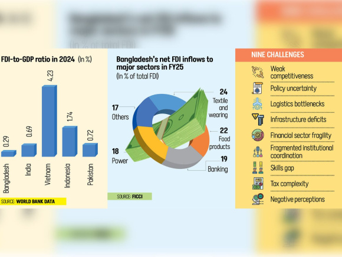

Business
Can Bangladesh finally fix its NPL problem?
Non-performing loans have hit a record high. Bankers and regulators disagree on whether the clean-up has even started.

Non-performing loans have hit a record high. Bankers and regulators disagree on whether the clean-up has even started.
From reserves to remittances, the numbers that moved the market.
Dharmendra Pradhan steps down following weeks of student-led demonstrations.
Nobody prepares you for the role reversal that arrives quietly.

What the building says about the politics practised inside it.

Mymensingh's elephants are running out of room, and out of time.
Mahfuz Anam on why the gap between BNP and the opposition is worrisome.

Investors keep naming the same obstacles. Little has changed.
An old tradition with an uncomfortably current diagnosis.